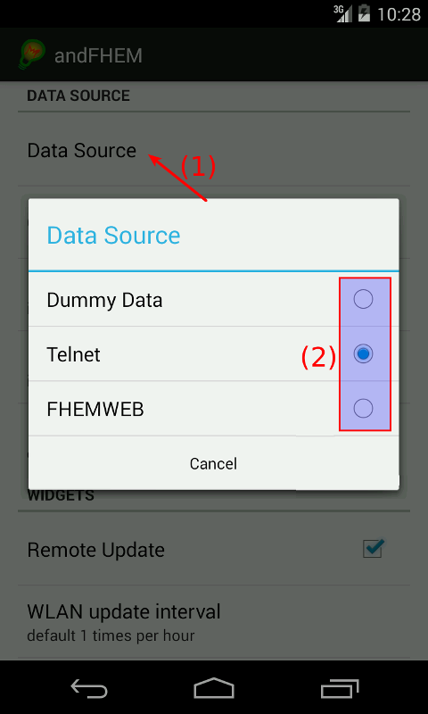
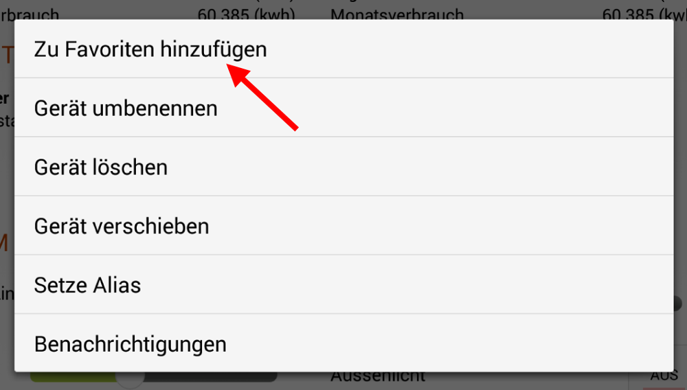

By default, andFHEM uses only dummy data. That way every user has something to look at when starting up the app the first time. To change this, go to the preferences (the wrench icon). Click on connection type and select the type you want to use. Enter, if necessary, your username, password, url and/or IP address and go back to the main application.
Long press on a device within the room view. Select "Add to Favorites" within the context menu. To remove a favorite, repeat the same procedure within the favorite devices view.
To get andFHEM to recognize a FS20 device as dim device, the model attribute has to be set within the fhem configuration. Valid types for dim devices are FS20DI, FS20DI10 and FS20DU. As an example, this might look like:
Yes. Add "on" and "off" to your set list:
AndFHEM has to use some way to extract device data from FHEM. The interface, which is used, is called xmllist. All the device data is converted to xml and written out into some document. When reading this document errors may happen. This is exactly what this error is about.
There are two flavors of this error. Either some device types or even only devices cannot be read. AndFHEM will tell you this after finishing updating the data. If you encounter this error, send a bug report to andfhem@klass.li containing the xmllist of your device. You can create a xmllist by typing xmllist as command into FHEMWEB or your telnet command line instance. For getting the list of only one device, just append the device name.
If the application tells you that it cannot read the complete xmllist, please send the complete (anonymized) xmllist output to andfhem@klass.li. The application tries to make some of the information included within the xmllist more readable, which is where some errors may happen.
First of all, make sure that your device can connect to FHEM. When using the telnet connection, install ConnectBot on your device. Start the application, insert telnet as connection type, insert your port and hostname and try to connect. If a connection can be established, contact me. When using FHEMWEB, try to connect to the FHEM instance using your browser on your phone or tablet.
Here are some possible causes if the connection is not working (as verified above):
If the connection from your phone/tablet to your FHEM server is working (as verified above) and you still cannot connect via andFHEM, make sure that all of your entered connection information within the app is correct. If still, no connection can be established, contact me.
FHT devices are pretty lazy, as the FHEM documentation tells. Consequently, it takes some time until the device actually sets the new desired temperature. If you still have the feeling that nothing happens, connect to FHEM via telnet and type inform on. Afterwards change the desired temperature within andFHEM. By now, telnet should now show up a new entry telling that the desired-temp value has been changed.
Add an additional line to your FHEM configuration file (fhem.cfg):
You can install the module manually by downloading it from the CPAN site and uncompressing it to fhem/lib/perl5/site_perl/5.12.2/
From version 1.4.9 on you can add a SUM_GRAPH_DIVISION_FACTOR attribute to your CUL_EM device in your fhem.cfg. The value has to be numeric.
The answer is yes. However, this will take some time - and effort from your side. To get the device type added, there I need some information. Open an issue on the Github page or write a mail containing the following information:
First of all, make sure you have reported the error! This is the only way for me to resolve the problem (and for you to make sure that someone cares about the problem). To resolve the behaviour, either ...
You have found a new bug. Now please help me to resolve it! If the application exits, Android asks you whether you want to notify the developer. Please, always click yes. This helps me resolving the issue without you having to run all through your log file to find out the appropriate error message. If the application does not exit and there is still some unexpected behavior, write a mail to andfhem@klass.li.
The mail should cover the following topics: